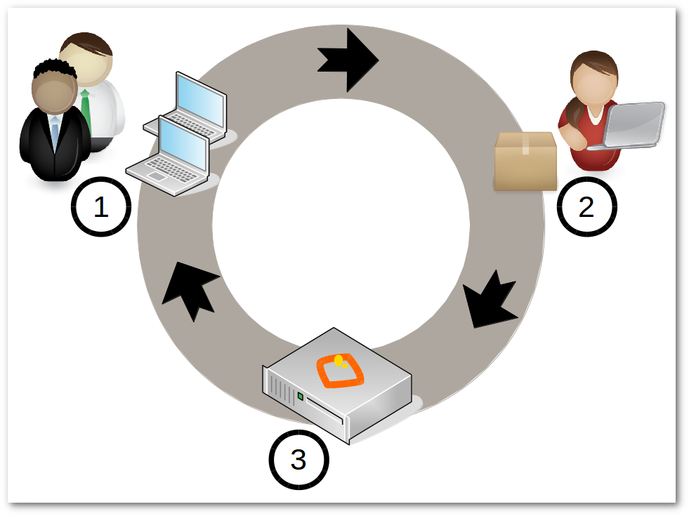
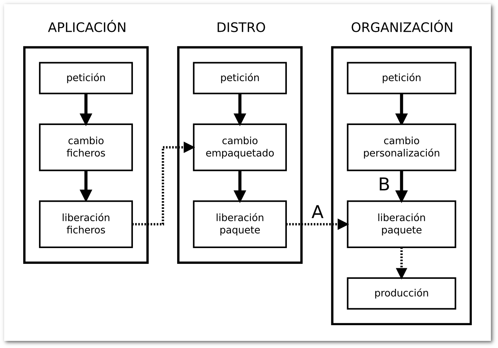

Administrando escritorios¶
En todo lo que nos rodea y en todo lo que nos mueve, debemos advertir que interviene en algo la casualidad.
-- Anatole France.
En el capítulo anterior, hemos hablado de la GCS y de cómo las distribuciones GNU/Linux utilizan el sistema de paquetería para garantizar la integridad frente al cambio.
Si tienes un equipo doméstico, todos los cambios producidos y liberados por los distintos proyectos y que hayan sido empaquetados y liberados por tu distribución GNU/Linux, serán instalados convenientemente con el simple hecho de dar la orden al gestor de paquetes para que actualice tu sistema.
Ahora bien, en una organización donde se requiera administrar los escritorios esto no es suficiente, veamos el porqué.
La personalización¶
La primera dificultad importante a la que se va a enfrentar un administrador, va a ser la de la personalización.
Imagina que tienes que migrar y administrar 1000 equipos a GNU/Linux y que tienes en tu red un servicio NTP, requiriéndose que todos tus escritorios estén con la hora sincronizada con este servicio.
Vas a tener que personalizar el cliente NTP en todos tus escritorios.
Una manera que se suele utilizar es instalar en un equipo una distribución GNU/Linux desde un DVD, editar el fichero de configuración del cliente NTP y configurar la IP (o el nombre DNS) del servidor donde se encuentra el servcio NTP. Después, puedes crear una imagen del disco duro con un sistema de clonado como pueda ser Clonezilla y clonar uno a uno los equipos usando dicha imagen.
Con este método, la personalización inicial reside en dicha imagen, pero sigamos imaginando...
Un día, a mitad de migración, recibes un correo y lees:
"Alberto: El servicio NTP dejará de dar servicio a partir del día 10. En su lugar vamos a disponer de un nuevo servicio, llamado QueHoraEs, que es mucho mejor porque..."
En este momento, ya estarás pensando en los 400 equipos que tienes migrados y te echarás las manos a la cabeza porque es evidente que este sistema de personalización no es adecuado.
nota
La personalización inicial es muy sencilla de realizar, pero un cambio en la personalización puede darse en cualquier momento, y tienes que estar preparado para poder realizarlo.
Gestores de Sistemas¶
Afortunadamente, existen unas herramientas denominadas Gestores de Sistemas (Systems Management Systems), que pueden ayudarnos en la administración de los escritorios.
Algunos de estos Gestores de Sistemas se centran en la adquisición del estado de los equipos como Nagios, y otros permiten automatizar tareas mediante la ejecución de código en los equipos de manera centralizada como Zenworks, Landscape, chef, puppet, cfengine, ansible.
Los Gestores de Sistemas están muy influidos por las iniciativas realizadas en los sistemas de gestión de redes de telecomunicaciones, pudiendo realizar una o un conjunto de las siguientes tareas:
- Inventario hardware.
- Monitoreado de disponibilidad de servidores y mediciones.
- Inventario e instalación de software.
- Gestión de antivirus y anti-malware.
- Monitoreado de las actividades de los usuarios.
- Monitoreado de la capacidad de los sistemas.
- Gestión de seguridad.
- Gestión de almacenamiento.
- Monitoreado de la utilización y capacidades de la red.
Estas tareas podemos clasificarlas de acuerdo a FCAPS, un modelo y marco de trabajo de red de la gestión de telecomunicaciones de ISO para la gestión de redes. FCAPS es un acrónimo de Fault, Configuration, Accounting, Performance, Security (Falla, Configuración, Contabilidad, Desempeño, Seguridad), que son las categorías en las cuales el modelo ISO define las tareas de gestión de redes.
-
Fault (Fallas): Es un evento que tiene un significado negativo. Su objetivo es reconocer, aislar , corregir y registrar fallos. Puede utilizar análisis de tendencias para predecir errores. Cuando se detecta un fallo o evento, se envía una notificación.
-
Configuration (Configuración): En el proceso de gestión de la configuración, las operaciones diarias son monitoreadas y controladas.
Los objetivos de la gestión de la configuración son:
- Recolectar información.
- Modificar la configuración.
- Generación de reportes
- Gestión de cambios.
Los cambios de Hardware y Software son controlados por este proceso:
- Actualización, Instalación y eliminación de programas.
- Actualización, Instalación y eliminación de equipamiento (impresoras, scaners, memoria, etc.)
Este proceso debe tener en cuenta:
- Permitir acceso rápido a la información de la configuración.
- Facilitar la configuración remota de los dispositivos.
- Proporcionar un inventario actualizado de Software y Hardware.
- Simplificación de la configuración de dispositivos.
- El seguimiento de cambios a la configuración.
-
Accounting (Contabilidad): Su objetivo es reunir las estadísticas de los usuarios.
-
Performance (Desempeño). Recolentando y analizando los datos de rendimiento, el estado general de los sistemas pueden ser monitorizado. Las tendencias pueden avisar de fallos de capacidad o de cuestiones relacionadas con la fiabilidad de los sistemas, antes de que en estos ocurran. Umbrales de rendimiento pueden ser establecidos para lanzar alarmas que serían controladas por la gestión de fallos habitual. Las alarmas se pueden clasificar atendiendo al grado de severidad.
- Security (Seguridad). Se encarga de controlar el acceso a recursos de red. La seguridad de los datos puede ser conseguida con la autenticación, cifrado y permisos, principalmente.
nota
Migasfreee atendiendo a FCAPS, tiene capacidades de Faults, Configuration y Accounting.
Un ejemplo de funcionamiento típico de un Gestor de Sistemas que incorpore tareas de Configuration usaría un lenguaje que especificaría a qué estado se quiere llevar a los equipos, no cómo llegar a ese estado. En nuestro caso, sería algo parecido a esto:
- asegúrate de que el paquete ntp-client está desinstalado,
- asegúrate de que el paquete quehoraes-client está instalado,
- asegúrate de que el fichero de configuración de quehoraes-client es el mismo que el que está en el servidor.
Periódicamente, los clientes se conectarían al servidor para obtener este código que será ejecutado mediante el intérprete propio del Gestor de Sistemas instalado en el cliente.
Este sistema permite automatizar aquellas tareas que realizan a menudo los administradores de sistemas, y aunque algunos Gestores de Sistemas se las ingenian para llevar un control de versiones, mantienen una base de datos independiente a la de los backends de los gestores de paquetes, dejando en entredicho todo lo relativo a la integridad de los sistemas.
Empaquetando la personalización¶
En AZLinux usamos otro método: empaquetamos siempre la personalización.
Para el caso del cliente “QueHoraEs”, crearíamos el paquete azl-quehoraes-client1 con la siguiente información:
- Dependencias: quehoraes-client
- Obsoletos: ntp-client
-
En el script de postinstalación escribiríamos el siguiente código:
En el fichero de configuración del cliente QueHoraes, modificar el valor de la entrada “server=” por la IP del servidor QueHoraEs
¡Listo! Con esto queda garantizada la integridad frente al cambio de la personalización, aprovechándonos de la integridad que nos proporciona el sistema de paquetería de nuestra distribución GNU/Linux.
Una vez empaquetada nuestra personalización, se hace relativamente sencillo realizar cualquier cambio posterior en ella. Pero crear un paquete desde cero para personalizar una distribución GNU/Linux no es tan fácil, no tanto por la creación del paquete en sí, sino porque la personalización requiere de los conocimientos suficientes sobre el sistema GNU/Linux y sobre la propia aplicación que se personaliza.
nota
Empaquetar la personalización nos asegura la integridad de los sistemas frente a sus cambios.
Date cuenta que no es necesario ningún Gestor de Sistemas para instalar dicha personalización. Sólo necesitas el Gestor de Paquetes, y éste siempre lo tienes disponible en cualquier distribución GNU/Linux.
Niveles de personalización¶
Las aplicaciones suelen incorporar dos niveles de personalización:
- La del usuario.
- La del sistema (para todos los usuarios del sistema).
La personalización del usuario es prioritaria a la del sistema, siempre y cuando esta última no sea obligatoria.
Es conveniente conocer si la aplicación que vas a configurar incorpora la personalización a nivel de sistema, ya que ésta es la que se tendrá que configurar.
En los casos en que las aplicaciones sólo tengan la configuración a nivel de usuario, o en los casos en los que se requiera, tendrás que recorrer todos los usuarios para aplicar la personalización a cada uno de ellos.
La liberación¶
Es el segundo problema importante con el que vas a tener que lidiar.
Por un lado, debes independizarte de los repositorios públicos de tu distribución GNU/Linux, por el simple motivo de que no puedes permitir que el control de los cambios que se instalarán en tus máquinas, lo tenga tu distribución GNU/Linux en vez de tu organización.
¿Imaginas que habría pasado en AZLinux cuando OpenSuSE sustituyó OpenOffice por LibreOffice? Cuando los usuarios hubieran encendido las máquinas a las 8:00 de la mañana, se iniciaría la actualización a LibreOffice automáticamente pudiéndose producir muchas incidencias. ¿Funcionaría todo? ¿No es mejor probar LibreOffice en tu organización antes de que se instale en todos tus equipos?
Tener la posibilidad de deshacer un cambio que se haya determinado como no deseado es importante.
Tienes que decidir por ti mismo el software que deben tener tus usuarios y, por tanto, debes tener los gestores de paquetes configurados contra tus propios repositorios de paquetes y gestionarlos de alguna manera.
Además, es conveniente que puedas planificar a quién y cuándo se deben liberar dichos cambios.
Imagina nuevamente el ejemplo de la sustitución de OpenOffice por LibreOffice. Estaríamos hablando de una actualización de cerca de 500 MB por equipo que, multiplicado por todos los equipos de una organización, podría resultar en mucho tráfico de red.
Una ventaja de planificar la liberación es que permite distribuir poco a poco los cambios, de tal manera que, si hay errores, afectará inicialmente a muy pocos equipos, permitiendo actuar de manera más relajada para corregir cualquier incidencia.
Por todo esto, y como los repositorios estándar de las distribuciones no tienen ningún mecanismo de planificación de la liberación, es por lo que decidimos desarrollar migasfree, extendiendo el concepto de repositorio de paquetes al concepto de despliegue: repositorio de paquetes dinámico y planificable.
Despliegue Migasfree¶
Un despliegue de migasfree es, simplemente, un repositorio estándar más la capacidad de poder especificar, de forma centralizada, cuándo y quién accede a ese repositorio.
Veamos como actúa migasfree en lo relativo a los repositorios:
-
Los cambios que se quieren liberar son empaquetados y subidos a un servidor migasfree.
-
Se crea un despliegue con los paquetes subidos y se establece a quién (atributos de usuario + equipo) y en qué momento se deben aplicar dichos cambios.
-
El servidor migasfree crea un repositorio físico (idéntico al de cualquier distribución GNU/Linux) con dichos paquetes, utilizando las herramientas estándar de creación de repositorios (
createrepopara paquetería RPM odpkg-scanpackagespara paquetería Debian). -
Cuando un cliente migasfree se conecta al servidor envía sus atributos al servidor.
-
El servidor consulta los despliegues para determinar, en función de esos atributos enviados, la lista de los repositorios físicos que tiene el cliente a su disposición y se los envía al cliente.
-
El cliente migasfree configura la lista de los repositorios físicos recibidos desde el servidor en el Gestor de Paquetes.
-
A continuación, el cliente migasfree da instrucciones al Gestor de Paquetes para que se produzca la eliminación, instalación y actualización de los paquetes desde los repositorios físicos.
La GCS en tu organización¶
En el capítulo anterior, hemos visto el proceso de la GCS en los distintos proyectos de software libre y también en las distribuciones GNU/Linux.
Pues bien, en una organización también debe realizarse el proceso de la GCS.

Proceso GCS en tu organización con migasfree
- Un usuario hace una petición de cambio.
- Un desarrollador programa el cambio de la configuración software dentro de un paquete y lo sube a un servidor migasfree.
- La liberación es realizada por el servidor migasfree a los ordenadores requeridos.
En AZLinux realizamos nuestra propia GCS y vemos como, de nuevo, se repiten las mismas actividades: petición de cambio, cambio y liberación.
Usamos dos tipos de peticiones de cambio:

Peticiones de cambio
-
Actualización de aplicaciones. Si por ejemplo recibimos una petición para actualizar Mozilla Firefox, descargamos desde los repositorios de la distribución la versión deseada. La probamos en laboratorio registrando cualquier información relevante en la petición de cambio. Finalmente, si todo es correcto, se liberan los paquetes a través de un despliegue migasfree planificando su distribución (ver A en el diagrama 'Peticiones de cambio').
-
Personalización de aplicaciones. Se produce por ejemplo cuando llega una petición de cambio para añadir un motor de búsqueda de sinónimos a Mozilla Firefox. Introducimos entonces en un paquete propio de AZLinux (azl-firefox) el código que instala dicho motor de búsqueda y liberamos dicho paquete en un despliegue de migasfree planificando su distribución (ver B en el diagrama 'Peticiones de cambio').
Las herramientas que usamos actualmente en cada actividad son:
-
En la petición de cambio:
- Gestor de proyectos: Redmine
-
En el cambio:
-
En la liberación:
nota
Migasfree nos proporciona, de manera centralizada, conocer el estado, no sólo del servidor migasfree, sino de cada uno de los equipos registrados en el servidor, convertiéndose en una herramienta ideal para hacer una auditoría tanto de software como de hardware.
Beneficios¶
Los principales beneficios que obtendrá tu empresa, como resultado de aplicar una GCS, serían:
- Reducción del coste de los servicios de desarrollo y mantenimiento.
- Optimización del uso de los recursos.
Y para ti, como administrador:
- Dispondrás de equipos más estables.
- Vas a pasar de ser un administrador que se echa las manos a la cabeza ante cualquier cambio a ser un administrador favorecedor del cambio, ya que dispones de las herramientas para hacer el seguimento y control de los cambios.
- Y, en última instancia, vas a mejorar sustancialmente la resolución de incidencias.
-
En AZLinux empleamos como nombre de paquete el prefijo "azl-" más el nombre del paquete que queremos personalizar. ↩